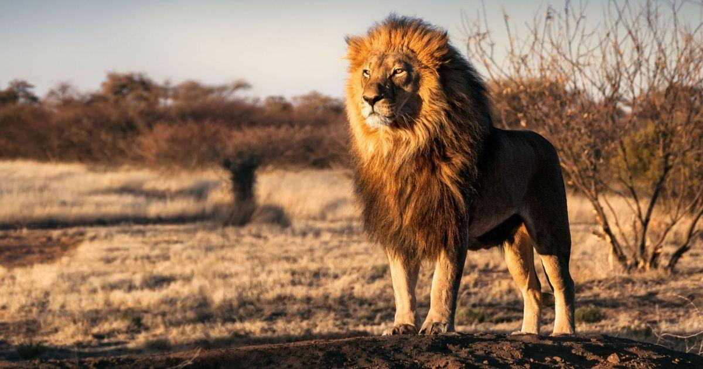
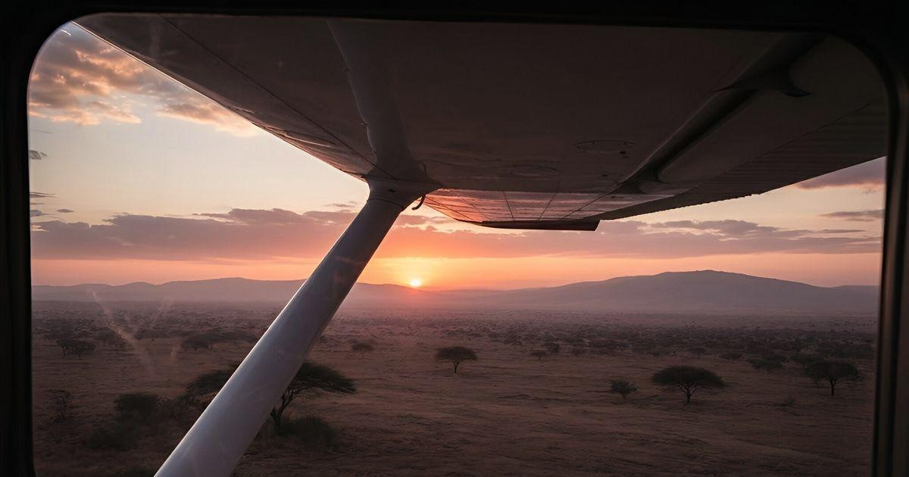
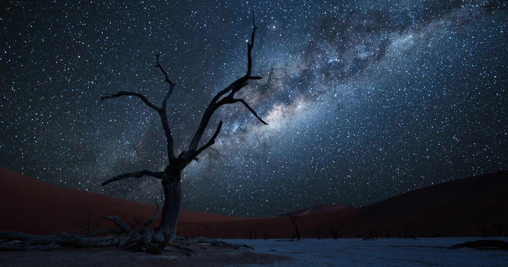
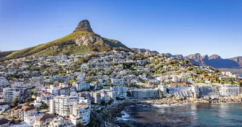
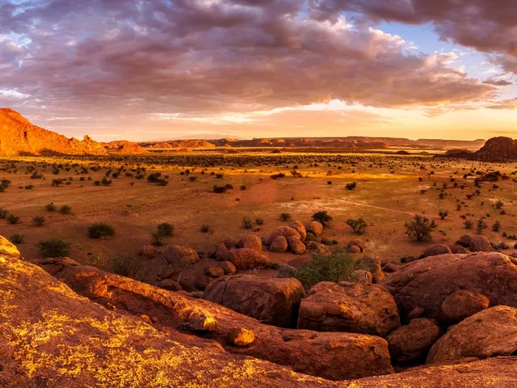
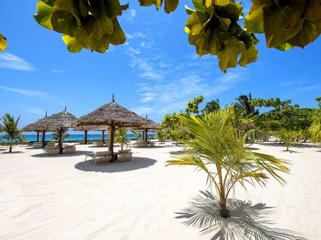
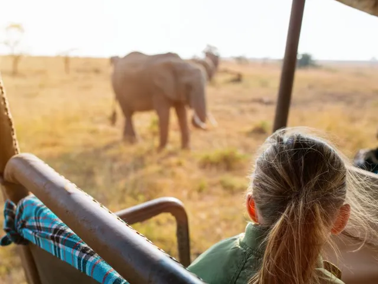

Afrika · individuell und privat geführt
Individuelle Afrika Reisen mit Gänsehaut-Momenten
Das erste Licht in der Savanne, ein stiller Abend im Camp, Landschaften von großer Weite. Wir planen Ihre Afrikareise mit Sinn für den Ort, die Jahreszeit und Ihren persönlichen Rhythmus.
Sie sehnen sich nach den unendlichen Weiten der Serengeti, oder der außergewöhnlichen Stimmung in der Namib-Wüste? Die Victoria Fälle faszinieren Sie genauso wie die Artenvielfalt im Okavango Delta? Dann gönnen Sie sich mit Africa Royal Tours Ihre maßgeschneiderte und individuelle Afrika Reise! Wir wissen, dass Reisen das kostbarste Geschenk sind, das man sich selbst machen kann. Deshalb sind wir von Africa Royal Tours überzeugt, dass Sie eine Reise verdienen, die genau Ihren Vorstellungen entspricht. Unsere erfahrenen Afrika Experten erstellen Ihnen Ihre maßgeschneiderte und privat geführte Afrika Reise. Für maximalen Komfort und Sicherheit sorgen ein eigener Chauffeur und privater Reiseleiter sowie luxuriöse Unterkünfte, in denen Sie sich nach einer aufregenden Safari durch die Wildnis Afrikas entspannen können.
Ein Morgen in der Serengeti, die Stille der Namib oder der Blick auf die Victoriafälle: Auf einer individuell geplanten Reise erleben Sie Afrika in Ihrem eigenen Tempo. Welche Orte, Unterkünfte und Begegnungen zu Ihnen passen, finden wir gemeinsam heraus.
Ihr Reisemanufaktur-Berater verbindet eigene Zielgebietserfahrung mit Ihren Vorstellungen. Gemeinsam stimmen Sie Route, Lodges, Reiseleitung und Transfers ab – so, dass die einzelnen Etappen sinnvoll ineinandergreifen.
Unsere schönsten Reiseziele

Botswana
Mehr erfahren ↗
Indischer Ozean
Mehr erfahren ↗
Kenia
Mehr erfahren ↗
Marokko
Mehr erfahren ↗
Namibia
Mehr erfahren ↗
Sambia & Simbabwe
Mehr erfahren ↗
Südafrika
Mehr erfahren ↗
Tansania
Mehr erfahren ↗
Uganda & Ruanda
Mehr erfahren ↗Ausgewählte Afrika Themenreisen


Ausgewählte Reiseinspiration
Auf Safari. Und weit darüber hinaus.
Entdecken Sie ausgewählte Reiseideen und einen Fantrip aus erster Hand – jede Route wird individuell auf Sie abgestimmt.

Reiseidee im Fokus
Tansania & Kenia aus der Luft
Eine 11-tägige Flugsafari durch Serengeti, Ngorongoro und Masai Mara – mit ausgewählten Lodges als Ausgangspunkt für die individuelle Beratung.
Flugsafari ansehen ↗
Sternenhimmel & Weite
Namibia Sternsafari
Eine Mietwagenreise mit weitem Landschaftserleben und Nächten unter dem namibischen Sternenhimmel – Route und Aufenthalte individuell abstimmen.
Namibia-Reise ansehen ↗
Fantrip · 16.12.2025
Franziska unterwegs in Südafrika
Die Franziska berichtet von ihrer persönlichen Reise entlang der Garden Route – mit Safari-Erlebnissen, Küsten und ausgewählten Lodges.
Reisebericht lesen ↗Ihre Reise, persönlich begleitet
Zeit, die Wildnis auf sich wirken zu lassen.
Ihr privater Reiseleiter schafft Freiraum für individuelle Entdeckungen. Wir planen Ihre Route mit Sorgfalt, wählen passende Unterkünfte und sind vor, während und nach der Reise für Sie da.
Unsere ArbeitsweiseDie Afrika-Reisemanufaktur
Erfahrung, die Ihrer Reise zugutekommt.
Ihre Interessen geben die Richtung vor. Unsere Zielgebietskenntnis verbindet sie zu einer stimmigen Route.
01
Spezialistentum
Spezialistentum bedeutet für uns, dass alle unsere Sales- und Product Manager die Zielgebiete selbst bereist haben. Unsere Empfehlungen beruhen auf eigenen Erfahrungen. Deshalb reisen wir regelmäßig selbst in die Zielgebiete, um uns vor Ort von der Qualität und dem hochklassigen Service unserer Partner zu überzeugen.
02
Persönlicher Service
Ein Ansprechpartner vor, während und nach der Reise. Bei uns bekommen Sie direkt einen persönlichen Betreuer, der Sie von Anfang bis Ende begleitet.
03
Massgeschneiderte Rundreisen
Gönnen Sie sich das Besondere. Jeder Mensch, jedes Leben ist einzigartig – Warum dann nicht auch Ihre Reise? Eigener Guide? Eigener Chauffeur? Nur Sie und Ihre Liebsten? Warum nicht?
KI-getriebene Reisebegleitung
Persönlich bei AST anfragenAST Connector+: Reiseintelligenz in Ihrer Hand.
KI-Assistenz mit Reisekontext, Flug-Cockpit, AR-Orientierung und Connectivity: Connector+ verbindet digitale Werkzeuge mit persönlicher Betreuung. Die ausführliche Produktseite zeigt Funktionen, Technologie und konkrete Nutzungsszenarien.
ARIA ist als Wissens- und Serviceanbindung vorgesehen. Welche Module und Datenquellen für Ihre Reise verfügbar sind, stimmen wir persönlich mit Ihnen ab.
Die Technik hinter Ihrer Reise ↗- KI: Kontextanalyse, Reisephase und Präferenzen
- Orientierung: AR, GPS und Explorer-Werkzeuge
- Reise-Cockpit: Flug, Hotel, Transfer und Dokumente
- Service: Connectivity, Privé und persönliche Kontakte
Kundenstimmen
Was unsere Gäste mitgenommen haben.
„Rundum eine gelungene Reise. Vielen, vielen Dank für die sehr gute Vorbereitung.“
Hellbarth-Busch · Ägypten-Reise · 12.01.2026
Originale Kundenstimme ansehen ↗„Vom ersten Kontakt bis zur Rückkehr hat wirklich alles reibungslos geklappt.“
Michael Reymann · Südafrika-Reise · 03.12.2025
Originale Kundenstimme ansehen ↗Reisemanufaktur-Wissen · Afrika
Eine gute Safari braucht den richtigen Rhythmus.
Afrika-Reisen verbinden oft große Landschaften und unterschiedliche Transportarten. Eine gute Planung denkt nicht nur an Highlights, sondern auch an Fahrzeiten, Aufenthaltsdauer und Pausen.
01
Zeit im Camp ist Reisezeit
Bei Safaris prägen Tagesrhythmus, Lage der Unterkunft und geplante Nächte das Erlebnis. Weniger Wechsel können mehr Zeit für Pirschfahrten und Erholung lassen.
02
Distanzen realistisch lesen
Kilometer sagen wenig über die tatsächliche Fahrtdauer aus. Straßenverhältnisse, Grenzübertritte und regionale Abläufe sollten bei der Routenfolge berücksichtigt werden.
03
Flugsafari bewusst kombinieren
Kleinflugzeuge können lange Überlandstrecken verkürzen. Gepäckgrenzen und Transfers sind je Anbieter unterschiedlich und müssen vor einer konkreten Planung geprüft werden.
Demo-Redaktion: Diese Expertise-Beispiele und zusätzlichen FAQ-Antworten sind illustrative Entwürfe. Zielgebietssaison, Tierbeobachtungen, Gepäckgrenzen, Zugänge und betriebliche Aussagen vor Veröffentlichung fachlich prüfen und freigeben.
Gut zu wissen
Fragen zur privaten Afrikareise
Von der Reiseidee bis zur Auswahl des richtigen Safari-Rhythmus.
Wie viele Nächte sollte ich für eine Safari einplanen?
Das hängt von Schutzgebiet, Anreise und gewünschtem Tempo ab. Mehrere Nächte an einem Ort können Transfers reduzieren und Zeit für unterschiedliche Tageszeiten lassen. Eine konkrete Empfehlung richtet sich nach Route und Verfügbarkeit.
Wann ist die beste Zeit für Tierbeobachtungen?
Beobachtungen in freier Natur lassen sich nicht garantieren. Jahreszeit, Niederschlag, Wasserstellen und Tierwanderungen variieren je Region. Die Reisezeit sollte mit aktuellen Informationen des konkreten Gebiets geplant werden.
Was ist bei einer Flugsafari wichtig?
Prüfen Sie vor der Buchung die Gepäckvorgaben kleiner Flugzeuge, zulässige Taschenarten, Transfers und mögliche Wetterabhängigkeit. Die Regeln unterscheiden sich nach Strecke und Betreiber und müssen für die konkrete Reise bestätigt werden.
Kann ich Safari und Strand kombinieren?
Eine Kombination kann passen, wenn Flugverbindungen, Saison und verfügbare Reisetage zusammenpassen. Zusätzliche Ortswechsel brauchen Zeitpuffer; konkrete Verbindungen und Leistungen sind vor Angebotserstellung zu prüfen.
Wie individuell sind die veröffentlichten Afrika-Reisen?
Die Reisekatalog-Einträge zeigen veröffentlichte Reiseideen und Reiseverläufe. Sie sind Ausgangspunkte, keine festen Gruppenprogramme. Route, Reisedauer, private Reiseleitung, Unterkünfte und weitere Leistungen stimmen wir mit Ihnen ab.
Wie prüfen Sie Ihre Empfehlungen und Partner?
Unsere Reisemanufaktur-Berater bereisen ihre Zielgebiete, bilden sich regelmäßig weiter und prüfen Partner vor Ort. So können wir bei der Planung auf konkrete Fragen zu Lodges, Distanzen und Reiseabläufen eingehen.
Welches Budget ist für eine Fernreise realistisch?
Die individuelle Fernreiseplanung beginnt in der Regel bei 5.000 € Gesamtbudget pro Person einschließlich internationaler Flüge. Preis und Leistungen richten sich unter anderem nach Reisezeit, Route, Unterkünften und gewünschtem Komfort. Liegt Ihr Budget darunter, können Sie Ihre Anfrage dennoch stellen; wir besprechen gemeinsam, was möglich ist.
Kann ich Safari mit Erholung oder Strand kombinieren?
Ja. Der Katalog enthält neben Safari- und Rundreiseideen auch Kombinationen mit Erholung und Inselaufenthalten. Welche Verbindung sinnvoll ist, hängt von Reisedauer, Saison, gewünschtem Tempo und Verfügbarkeit ab.
Welche Gästeerfahrungen gibt es?
Die auf dieser Seite zitierten Rückmeldungen stammen aus den veröffentlichten Kundenstimmen zu Ägypten- und Südafrika-Reisen. Die Zitate geben individuelle Erfahrungen wieder und sind keine Garantie für identische Abläufe oder Leistungen bei anderen Reisen.
Der erste Schritt
Erzählen Sie uns von Ihrer Afrika-Reise.
Reisezeit, Interessen und Budget geben uns eine erste Orientierung für das persönliche Gespräch.
Entscheidungshilfen
Reiseplanung, nachvollziehbar erklärt.
Unsere besten Blogbeiträge

Unendliche Weiten in Namibia
Mehr erfahren ↗
Sansibar - Die Gewürzinsel
Mehr erfahren ↗
Do's & Dont's auf Safari
Mehr erfahren ↗Alle Reiseideen
Alle verfügbaren Reiseideen mit ausführlichen Verläufen in dieser Demo – ohne Wechsel auf die bisherigen Länder-Websites.